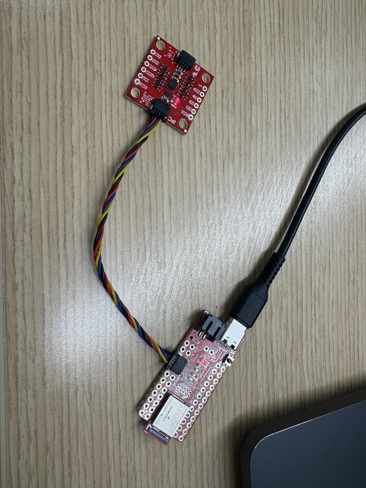
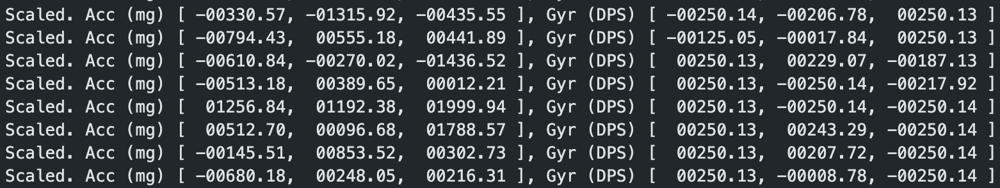
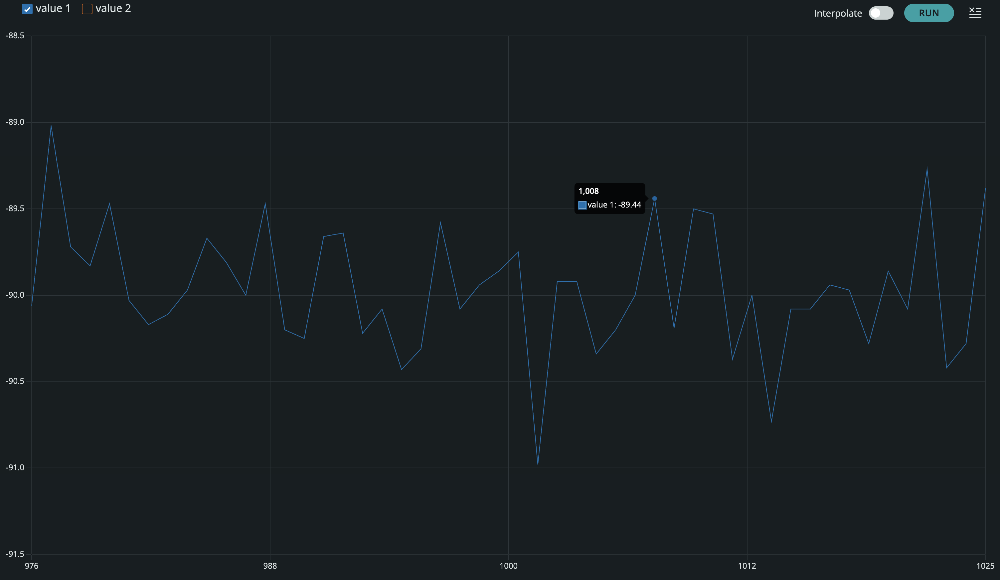
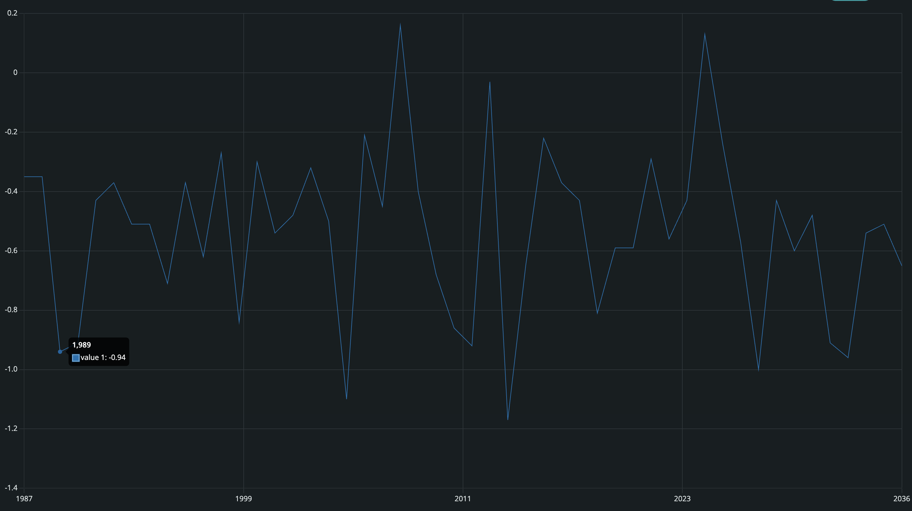
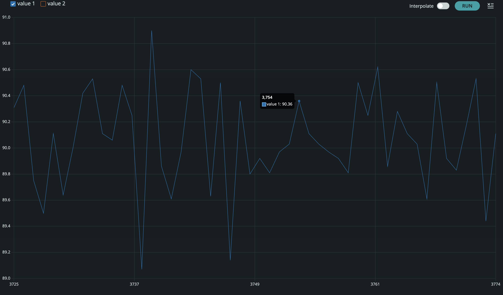
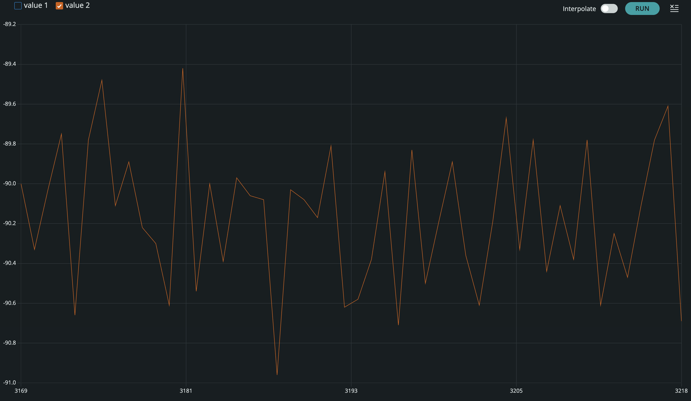
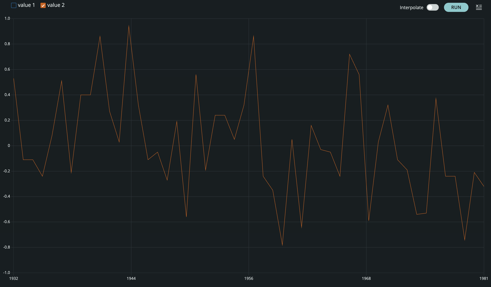
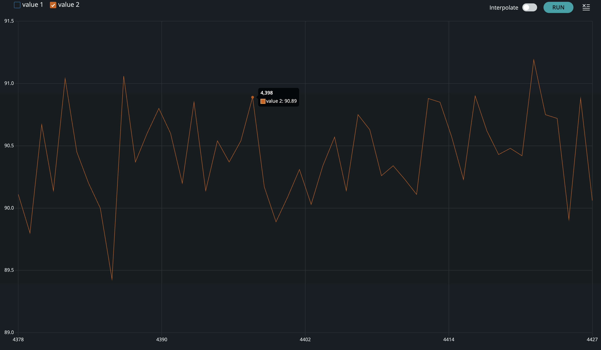

Setting Up the IMU
Artemis to IMU connection
Below is a video of the IMU example code output via the serial plotter in the Arduino IDE.
ADO_VAL
The AD0_VAL value sets which I2C address the IMU uses. When the value is set to 1, such as in the example code, the IMU uses the default address of all zeros. When the value is set to 0, the board uses another address, which causes the example code in the IDE to not read the data stream correctly.
Acceleration and Gyroscope Data Discussion
From the above image: The Scaled. Acc (mg) values show acceleration along the X, Y, and Z axes in milligravity (1000mg = 1g). The small X and Y readings indicate noise from those sensors, while the 1038 mg in the Z direction shows gravity is mostly aligned with the Z-axis, meaning the board is upright. The Gyr (DPS) values give angular velocity about each axis in degrees per second, with the very small readings indicating almost no rotation or likely sensor noise.
Below is an example of output while the IMU is moving:
Accelerometer
Pitch and Roll Outputs at {-90, 0, 90} degrees
Pitch
  Roll
  The code I used to represent the equations from class in the arduino IDE is here:
float pitch;
float roll;
pitch = atan2(myICM.accX(), myICM.accZ()) * 180 / M_PI;
roll = atan2(myICM.accY(), myICM.accZ()) * 180 / M_PI;
SERIAL_PORT.print(pitch);
SERIAL_PORT.print(",");
SERIAL_PORT.println(roll);
Accuracy Observations
The pitch and roll outputs were generally accurate at the tested angles, showing close values near -90, 0, and 90 degrees. However, there was significant noise in the readings especially when considering the -90 or 90 degree positions for both pitch and roll. This noise leads the data to be very imprecise despite being generally accurate, which could influence later positional calculations.
Gyroscope
What I Measured
I logged the gyroscope angular rate outputs along each axis. At rest, I expected readings near zero with a small bias; during manual rotations, the axis aligned with rotation should respond strongly.
Bias / Drift Notes
I observed a small nonzero offset at rest (bias). Over longer time windows, integrating gyro rates can lead to drift, which is why later labs typically fuse accel + gyro data.
// Example gyroscope print (replace with your variables)
Serial.print("GYRO,");
Serial.print(gx); Serial.print(",");
Serial.print(gy); Serial.print(",");
Serial.println(gz);Image placeholder: add a plot/screenshot showing gyro response during a rotation.
Sample Data
Data Format
I stored / streamed data in a consistent CSV-like format so it could be quickly parsed for plotting and analysis. A typical row included a timestamp and the accelerometer + gyroscope values.
# Example parsing skeleton (replace with your workflow)
import pandas as pd
# df = pd.read_csv("lab2_imu.csv")
# df.columns = ["t_ms","ax","ay","az","gx","gy","gz"]
# Quick check
# print(df.head())Observations
In the sample dataset, the accelerometer showed clear changes with orientation and motion, while the gyroscope captured quick rotational impulses more cleanly. Noise levels were small but noticeable, especially during hand motion.
Image placeholder: add a plot of accel + gyro vs time (or screenshots from your analysis).
Messing Around with the Car
For the last part of this lab I drove the car around to get a feeling for it's dynamics. As seen in the clip above the car is pretty easy to get off the ground, and it often skids when making turns at high speeds. While I also tried to keep it more grounded outside this clip, I found that the car tends to become unstable very easily.
References
For this lab, I referenced the in class notes for equations. I also referenced the class pages of Jack Long and Aidan Derocher for formatting and when I was stuck. I also used chatGPT for syntax and formatting.